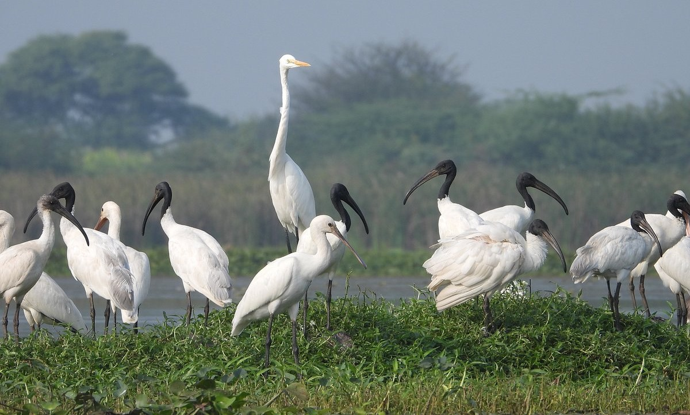
About Us
Nandur Madhmeshwar Bird Sanctuary is located at Niphad Tehsil of Nashik District, known as the Bharatpur of Maharashtra. It is designated as Ramsar Site and it's a Maharashtra's first Ramsar site. A stone pickup is constructed across river Godavari at Nandur Madhmeshwar. This resulted into the formation of rich environment for biological diversity. Many species of plants like Babul, Tamarind, Neem, Jamun, Vilayati, Maharukh, Pangara, Mango, Eucalyptus, are found here, also some aquatic plant species are available.
History
Nandur Madheshwar Bird Sanctuary is home to thousands of beautiful and migratory birds in Maharashtra. There are more than 230 species of birds here, of which 80 are migratory species. Migratory birds found in this sanctuary are white stork, glossy ibis, spoonbill, flamingo, swan brahminy duck, pintail, mallard, wigeon, gargantuan shoveler, pochard, crane shanks, curlew, pretty wagtail, godwits, weavers etc._
Resident birds include black ibis, spot - billed gulls, little grebes, cormorants, egrets, herons, storks, kites, vultures, buzzards, harriers, osprey, quail, partridges, eagles, water hens, sandpipers, swifts, gray hornbills, peacocks _ etc. are included.
There are about 460 species of plants, of which about 80 are aquatic plant species. The trees found on the banks of the lake are Babul, Neem, Tamarind Jamun, Mahrukh, Vilayati Chinch, Mango, Pangara, Nilgiri etc. Wheat, jowar, sugarcane, vegetables etc. are intensively cultivated in the areas included in this and partially submerged areas.
Although the sanctuary is primarily a bird sanctuary, many other fascinating types of wildlife can be seen in the close vicinity.__ The animals seen here are otter, palm civet, fishing cat, jackal, mongoose, wolves and many types of snakes etc. About 24 species of fish have been recorded in the reservoir.
Geography
Nandur Madhesh Bird Sanctuary is located 40 km from Nashik. The distance between Niphad - Nandur Madhesh Bird Sanctuary is 12 KM. The distance between Sinar - Nandur Madhesh Sanctuary is 25 km. State transport and local taxi services are easy to reach there.__
weather / climate
The climate of Nashik district is generally dry except during the south-west monsoon season. The maximum temperature in summer is 42.5°C, and the minimum temperature in winter is below 5°C.
Gallery
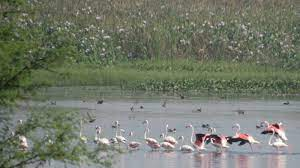
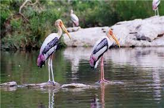
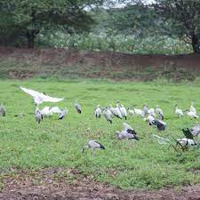
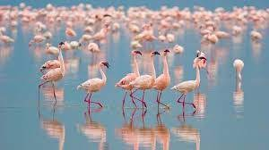
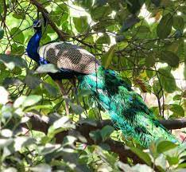
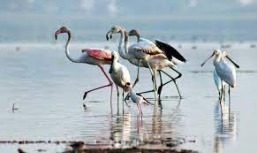
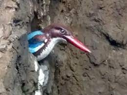
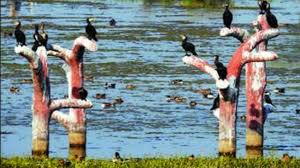
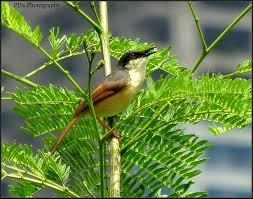
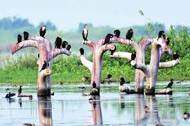